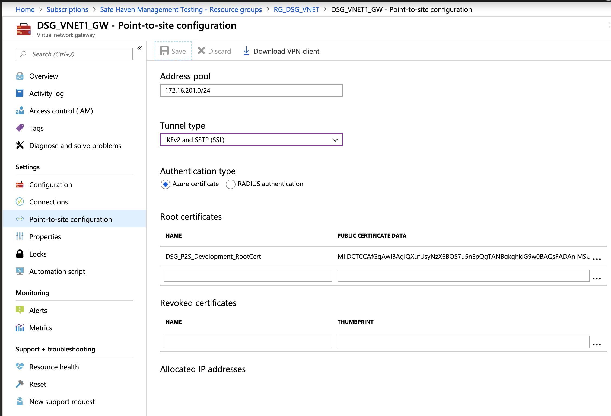
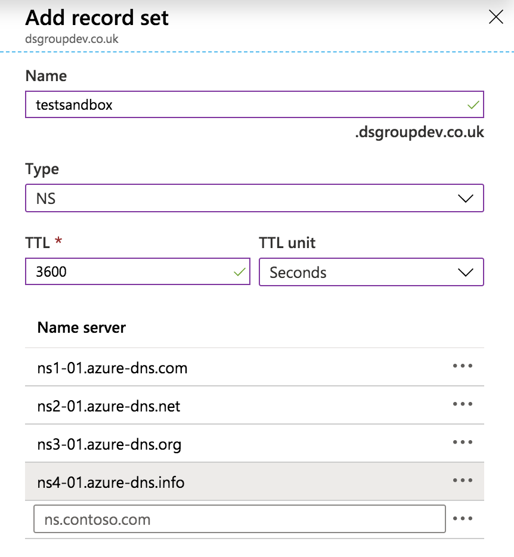
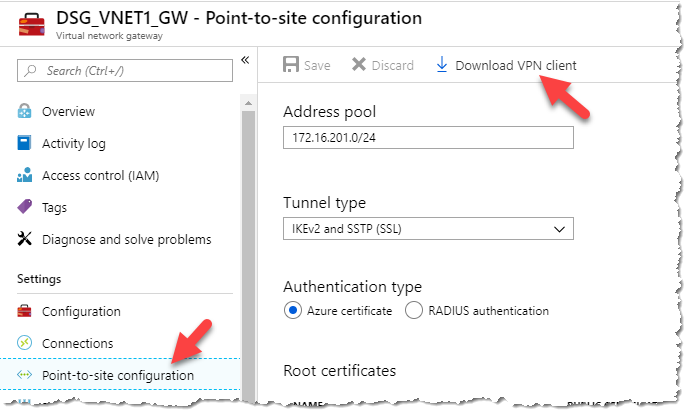
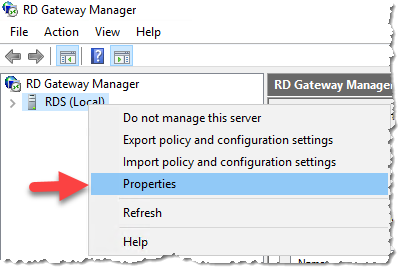
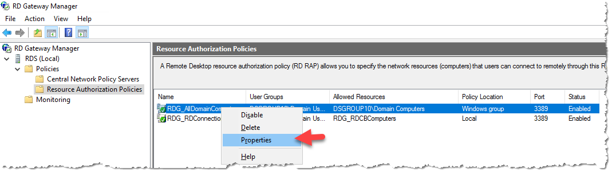
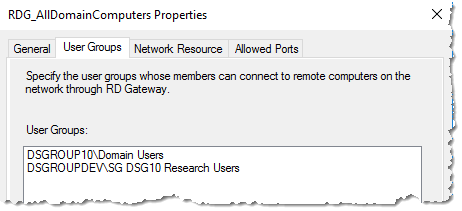
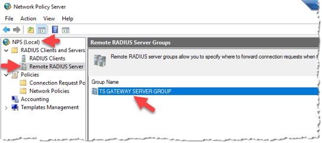

Secure Research Environment Build Instructions¶
The following instructions will walk you through deploying a Secure Research Environment. This assumes the Safe Haven Management (SHM) environment has already been set up.
Contents¶
1. Prerequisites¶
An Azure subscription with sufficient credits to build the environment in
If deploying at Turing, you will need to be a member of the relevant Azure Security Group:
Safe Haven Test Adminsfor testing/development orSafe Haven Production Adminsfor production deployment. This will give you the administrative access to:the relevant Safe Haven Management Azure subscription
the relevant Safe Haven Management Active Directory Domain
the relevant Safe Haven Management VMs
PowerShellfor AzureInstall PowerShell v6.0 or above
Install the Azure PowerShell Module
Microsoft Remote DesktopOn Mac this can be installed from the apple store
OpenSSLInstall using your package manager of choice
Download a client VPN certificate for the Safe Haven Management VNet¶
Navigate to the Safe Haven Management (SHM) KeyVault in the Safe Haven Management subscription via
Resource Groups -> RG_SHM_SECRETS -> kv-shm-<shm-id>.Once there open the “Certificates” page under the “Settings” section in the left hand sidebar.
Click on the certificate named
shm-<shm-id>-vpn-client-cert, click on the “current version” and click the “Download in PFX/PEM format” link.To install, double click on the downloaded certificate, leaving the password field blank.
Make sure to securely delete the “*.pfx” certificate file after you have installed it.
This certificate will also allow you to connect via VPN to the SRE VNets once deployed.
Configure a VPN connection to the Safe Haven Management VNet¶
Navigate to the Safe Haven Management (SHM) VNet gateway in the SHM subscription via
Resource Groups -> RG_SHM_NETWORKING -> VNET_SHM_<shm-id>_GW, where<shm-id>is defined in the config file. Once there open the “Point-to-site configuration page under the “Settings” section in the left hand sidebar (see image below).Click the “Download VPN client” link at the top of the page to get the root certificate (
VpnServerRoot.cer) and VPN configuration file (VpnSettings.xml), then follow the VPN set up instructions using the Windows or Mac sections as appropriate.On Windows you may get a “Windows protected your PC” pop up. If so, click
More info -> Run anywayOn Windows do not rename the vpn client as this will break it
Note that on OSX double clicking on the root certificate may not result in any pop-up dialogue, but the certificate should still be installed. You can view the details of the downloaded certificate by highlighting the certificate file in Finder and pressing the spacebar. You can then look for the certificate of the same name in the login KeyChain and view it’s details by double clicking the list entry. If the details match the certificate has been successfully installed.

Continue to follow the set up instructions from the link above, using SSTP (Windows) or IKEv2 (OSX) for the VPN type and naming the VPN connection “Safe Haven Management Gateway (
<shm-id>)”, where<shm-id>is defined in the config file.
Ensure the required SRE resources can be accessed¶
Access to a new Azure subscription which the SRE will be deployed to
If a subscription does not exist, create one with the name
Secure Research Environment <SRE ID> (<shm-id>), picking an SRE ID that is not yet in use and setting<shm-id>to the value given in the config file.Add an initial $3,000 for test and production sandbox environments and the project specific budget for production project environments
Give the relevant “Safe Haven
<shm-id>Admins” Security Group Owner role on the new SRE subscription
Access to a public routable domain name for the SRE and its name servers
This can be a top-level domain (eg.
dsgroup100.co.uk) or a subdomain (eg.sandbox.dsgroupdev.co.ukorsandbox.testb.dsgroupdev.co.uk)A DNS for this domain must exist in the
Safe Haven Domainssubscription, in theRG_SHM_DNS_TESTorRG_SHM_DNS_PRODUCTIONresource group.To create a new DNS zone:
From within the resource group click
"+" Add -> DNS Zoneand click “create”Set the Name field to the SRE domain (eg.
sandbox.dsgroupdev.co.uk)Click “Review + create”
Once deployment is finished, click “Go to resource” to view the new Azure DNS zone
Copy the 4 nameservers in the “NS” record to the domain’s DNS record
if this is a top-level domain, contact whoever registered the domain
if this is a subdomain of an existing Azure domain (eg.
sandbox.dsgroupdev.co.ukthen:go to the DNS zone for the top-level domain in Azure
add a new NS record using the 4 nameservers you copied down above 
Deploying multiple SREs in parallel¶
NOTE: You can only deploy to one SRE at a time from a given computer as both the Az CLI and the Az Powershell module can only work within one Azure subscription at a time. For convenience we recommend using one of the Safe Haven deployment VMs on Azure for all production deploys. This will also let you deploy compute VMs in parallel to as many SREs as you have deployment VMs. See the parallel deployment guide for details.
2. Define SRE configuration¶
The full configuration details for a new SRE are generated by defining a few “core” properties for the new SRE and the management environment in which it will be deployed.
Core SHM configuration properties¶
The core properties for the relevant pre-existing Safe Haven Management (SHM) environment must be present in the environment_configs/core folder.
The following core SHM properties must be defined in a JSON file named shm_<shm-id>_core_config.json.
NOTE: The netbiosName fields must have a maximum length of 15 characters.
{
"subscriptionName": "Name of the Azure subscription the management environment is deployed in",
"domainSubscriptionName": "Name of the Azure subscription holding DNS records",
"adminSecurityGroupName" : "Name of the Azure Security Group that admins of this Safe Haven will belong to",
"computeVmImageSubscriptionName": "Azure Subscription name for compute VM",
"domain": "The fully qualified domain name for the management environment",
"netbiosname": "A short name to use as the local name for the domain. This must be 15 characters or less",
"shmId": "A short ID to identify the management environment",
"name": "Safe Haven deployment name",
"organisation": {
"name": "Organisation name",
"townCity": "Location",
"stateCountyRegion": "Location",
"countryCode": "e.g. GB"
},
"location": "The Azure location in which the management environment VMs are deployed",
"ipPrefix": "The three octet IP address prefix for the Class A range used by the management environment. Use 10.0.0 for this unless you have a good reason to use another prefix."
}
Core SRE configuration properties¶
The core properties for the new SRE environment must be present in the environment_configs/core folder.
The following core SRE properties must be defined in a JSON file named sre_<SRE ID>_core_config.json.
{
"subscriptionName": "Name of the Azure subscription the secure research environment is deployed in",
"adminSecurityGroupName" : "Name of the Azure Security Group that admins of this SHM belong to",
"sreId": "A short ID to identify the secure research environment. Ideally this should be 7 characters or less; if not it will be truncated in some places, but will otherwise not cause problems.",
"shmId": "The short ID for the SHM segment to deploy against",
"tier": "The data classification tier for the SRE. This controls the outbound network restrictions on the SRE and which mirror set the SRE is peered with",
"domain": "The fully qualified domain name for the SRE",
"netbiosname": "A short name to use as the local name for the domain. This must be 15 characters or less. If the first part of the domain is less than 15 characters, use this for the netbiosName",
"ipPrefix": "The three octet IP address prefix for the Class A range used by the management environemnt",
"rdsAllowedSources": "A comma-separated string of IP ranges (addresses or CIDR ranges) from which access to the RDS webclient is permitted. For Tier 0 and 1 this should be 'Internet'. For Tier 2 this should correspond to the any organisational networks (including guest networks) at the partner organisations where access should be permitted from (i.e. any network managed by the organsiation, such as EduRoam, Turing Guest, Turing Secure etc). For Tier 3 SREs, this should correspond to the RESTRICTED networks at the partner organisations. These should only permit connections from within meduim security access controlled physical spaces and from managed devices (e.g. Turing Secure). Using 'default' will use the default Turing networks.",
"rdsInternetAccess": "Whether to allow outbound internet access from inside the remote desktop environment. Either 'Allow', 'Deny' or 'default' (for Tier 0 and 1 'Allow' otherwise 'Deny')",
"computeVmImageType": "The name of the Compute VM image (most commonly 'Ubuntu')",
"computeVmImageVersion": "The version of the Compute VM image (e.g. 0.1.2019082900)"
}
SRE IP Address prefix¶
Each SRE must be assigned it’s own unique IP address space, and it is very important that address spaces do not overlap in the environment as this will cause network faults. The address spaces use a private class A range and use a 21bit subnet mask. This provides ample addresses for a SRE and capacity to add additional subnets should that be required in the future.
Generate full configuration for SRE¶
Ensure you have the latest version of the Safe Haven repository from https://github.com/alan-turing-institute/data-safe-haven.
Open a Powershell terminal and navigate to the top-level folder within the Safe Haven repository.
Generate a new full configuration file for the new SRE using the following commands.
Import-Module ./deployment/common/Configuration.psm1 -ForceAdd-SreConfig -sreId <SRE ID>, where<SRE ID>is a short string, e.g.sandboxforsandbox.dsgroupdev.co.uk
A full configuration file for the new SRE will be created at
environment_configs/full/sre_<SRE ID>_full_config.json. This file is used by the subsequent steps in the SRE deployment.Commit this new full configuration file to the Safe Haven repository
3. Prepare Safe Haven Management deployment¶
Ensure you have the latest version of the Safe Haven repository from https://github.com/alan-turing-institute/data-safe-haven.
Open a Powershell terminal and navigate to the
deployment/secure_research_environment/setupdirectory within the Safe Haven repository.Ensure you are logged into Azure within PowerShell using the command:
Connect-AzAccount
Clear out any remaining SRE data from previous deployments¶
NOTE Ensure that the SRE subscription is completely empty before running this script. If the subscription is not empty, confirm that it is not being used before deleting the resources
Clear any remaining SRE data from the SHM by running
./Remove_SRE_Data_From_SHM.ps1 -sreId <SRE ID>, where the SRE ID is the one specified in the config.
Set up users and DNS¶
Prepare SHM by running
./Prepare_SHM.ps1 -sreId <SRE ID>, where the SRE ID is the one specified in the configThis step also creates a KeyVault in the SRE subscription in
Resource Groups -> RG_SRE_SECRETS -> kv-shm-<shm-id>-sre-<SRE ID>. Additional deployment steps will add secrets to this KeyVault and you will need to access some of these for some of the manual configuration steps later.
4. Deploy Virtual Network¶
Create the virtual network¶
Ensure you have the latest version of the Safe Haven repository from https://github.com/alan-turing-institute/data-safe-haven.
Open a Powershell terminal and navigate to the
deployment/secure_research_environment/setupdirectory within the Safe Haven repository.Ensure you are logged into Azure within PowerShell using the command:
Connect-AzAccountRun
./Create_VNET.ps1 -sreId <SRE ID>, where the SRE ID is the one specified in the configThe deployment will take around 20 minutes. Most of this is deploying the virtual network gateway.
The VNet peerings may take a few minutes to provision after the script completes.
Set up a VPN connection to the SRE¶
In the SRE subscription open
Resource Groups -> RG_SRE_NETWORKING -> VNET_SRE_<SRE ID>_GWSelect “Point to Site Configuration” from the left-hand navigation
Download the VPN client from the “Point to Site configuration” menu 
Install the VPN on your PC and test. See the Configure a VPN connection to the Safe Haven Management VNet section in the Prerequisites list above for instructions. You can re-use the same client certificate as used for the VPN to the management VNet gateway.
5. Deploy SRE Domain Controller¶
Ensure you have the latest version of the Safe Haven repository from https://github.com/alan-turing-institute/data-safe-haven.
Open a Powershell terminal and navigate to the
deployment/secure_research_environment/setupdirectory within the Safe Haven repository.Ensure you are logged into Azure within PowerShell using the command:
Connect-AzAccountRun
./Setup_SRE_DC.ps1 -sreId <SRE ID>script, where the SRE ID is the one specified in the configThe deployment will normally take around 30 minutes. Most of this is running the setup scripts after creating the VM. However it may take longer if many Windows updates need to be performed.
Troubleshooting: If you see errors such as
Installing Windows updates failedyou should try re-running the script (you do not need to destroy existing resources as the script is idempotent).
6. Deploy Remote Desktop Service Environment¶
Create RDS VMs and perform initial configuration¶
Ensure you have the latest version of the Safe Haven repository from https://github.com/alan-turing-institute/data-safe-haven.
Open a Powershell terminal and navigate to the
deployment/secure_research_environment/setupdirectory within the Safe Haven repository.Ensure you are logged into Azure within PowerShell using the command:
Connect-AzAccountDeploy and configure the RDS VMs by running
./Setup_SRE_RDS_Servers.ps1 -sreId <SRE ID>, where the SRE ID is the one specified in the configThe deployment will take around 40 minutes to complete.
Install and configure RDS Environment and webclient¶
Connect to the RDS Gateway via Remote Desktop client over the SRE VPN connection
The IP address can be found using the Azure portal by navigating to the Virtual Machine (
Resource Groups -> RG_SRE_RDS -> RDG-SRE-<SRE ID>)Login as the SRE domain admin user eg.
sresandboxadmin@sandbox.dsgroupdev.co.uk) where the admin username and password are stored in the SRE KeyVaultResource Groups -> RG_SRE_SECRETS -> kv-shm-<shm-id>-sre-<SRE ID>assre-<SRE ID>-dc-admin-usernameandsre-<SRE ID>-dc-admin-password. (NB. all SRE Windows servers use the same admin credentials.)
Install RDS environment and webclient¶
Open a PowerShell command window with elevated privileges - make sure to use the
Windows PowerShellapplication, not theWindows PowerShell (x86)application. The required server management commandlets are not installed on the x86 version.Run
C:\Installation\Deploy_RDS_Environment.ps1(prefix the command with a leading.\if running from within theC:\Installationdirectory)This script will take about 20 minutes to run (this cannot be done remotely, as it needs to be run as a domain user but remote Powershell uses a local user)
Configure RDS to use SHM NPS server for client access policies¶
In “Server Manager”, open
Tools -> Remote Desktop Services -> Remote Desktop Gateway Manager
In the left pane, underneath “RD Gateway Manager”, right click on the
RDG-SRE-<SRE ID> (Local)object and select “Properties” Select
RD CAP StoretabSelect the
Central Server Running NPSEnter the IP address of the NPS within the management domain (this will be
10.<something>.0.248, you can see it from the Azure portal (Resource Groups -> RG_SHM_NPS -> NPS-SHM-<SHM ID>)Set the “Shared Secret” to the value of the
sre-<SRE ID>-nps-secretin the SRE Key Vault (Resource Groups -> RG_SRE_SECRETS -> kv-shm-<shm-id>-sre-<SRE ID>).
Click
OKto close the dialogue box.
Set the security groups for access to session hosts¶
Expand the
RDG-SRE-<SRE ID> (Local)server object and selectPolicies -> Resource Authorization PoliciesRight click on
RDG_AllDomainComputersand select “Properties` On the
User Groupstab clickAddClick
Locationsand select the management domain (e.g.testa.dsgroupdev.co.uk) and clickOKEnter
SGinto theEnter the object names to selectbox and click onCheck NamesSelect the
SG <SRE ID> Research Userssecurity group from the list.
Click
OKand the group will be added to the “User Groups” screen Click
OKto exit the dialogue boxRight click on
RDG_RDConnectionBrokerspolicy and selectProperties
Repeat the process you did for the
RDG_AllDomainComputerspolicy, again adding theSG <SRE ID> Research Userssecurity group from the list.
Increase the authorisation timeout to allow for MFA¶
In “Server Manager”, select
Tools -> Network Policy ServerExpand
NPS (Local) -> RADIUS Clients and Servers -> Remote RADIUS Server Groupsand double click onTS GATEWAY SERVER GROUPHighlight the server shown in the
RADIUS Servercolumn and clickEditChange to the
Load Balancingtab and change the parameters to match the screen below
Click
OKtwice and closeNetwork Policy ServerMMC
Configuration of SSL on RDS Gateway¶
Ensure you have the latest version of the Safe Haven repository from https://github.com/alan-turing-institute/data-safe-haven.
Open a Powershell terminal and navigate to the
deployment/secure_research_environment/setupdirectory within the Safe Haven repository.Ensure you are logged into Azure within PowerShell using the command:
Connect-AzAccountRun the
./CreateUpdate_Signed_Ssl_Certificate.ps1 -sreId <SRE ID> -emailAddress <email>, where the SRE ID is the one specified in the config and the email address is one that you would like to be notified when certificate expiry is approaching.NOTE: This script should be run again whenever you want to update the certificate for this SRE.
Troubleshooting: Let’s Encrypt will only issue 5 certificates per week for a particular host (e.g.
rdg-sre-sandbox.sandbox.dsgroupdev.co.uk). For production environments this should usually not be an issue. The signed certificates are also stored in the KeyVault for easy redeployment. However, if you find yourself needing to re-run this step without the KeyVault secret available, either to debug an error experienced in production or when redeploying a test environment frequently during development, you should run./CreateUpdate_Signed_Ssl_Certificate.ps1 -dryRun $trueto use the Let’s Encrypt staging server, which will issue certificates more frequently. However, these certificates will not be trusted by your browser, so you will need to override the security warning in your browser to access the RDS web client for testing.
Test RDS deployment¶
Disconnect from any SRE VMs and connect to the SHM VPN
Connect to the SHM Domain Controller via the Remote Desktop client
Log in as a domain user (ie.
<admin username>@<SHM domain>) using the username and password obtained from the Azure portal. They are in theRG_SHM_SECRETSresource group, in thekv-shm-<shm-id>key vault, under “SECRETS”.The username is the
shm-<shm-id>-dcnps-admin-usernamesecret plus@<SHM DOMAIN>where you add your custom SHM domain. For exampleshmtestbadmin@testb.dsgroupdev.co.ukThe password in the
shm-<shm-id>-dcnps-admin-passwordsecret.
NB. Before performing the remaining steps, ensure that you have created a non-privileged user account that you can use for testing. This user should be created in the local Active Directory and must have been synchronised to the Azure Active Directory. You must ensure that you have assigned a licence to this user so that MFA will work correctly.
Ensuring that a non-privileged user account exists
In the
Server Managementapp, clickTools -> Active Directory Users and ComputersOpen the
Safe Haven Research UsersOUEnsure that the non-privileged user account that you want to use is listed here, or if it is not then create it.
Adding the user account to the correct Security Group
Still in the
Active Directory Users and Computersapp, open theSafe Haven Security GroupsOURight click the
SG <SRE ID> Research Userssecurity group and selectPropertiesClick on the
Memberstab.If the user you plan to use is not already listed here you must add them to the group (the automatically-created test researcher should already be in the correct group)
Click the
AddbuttonEnter the start of the
<SRE ID>and click “Check names”Select the
<SRE ID> Test Researcherand clickOkClick
Okagain to exit the add users dialogue
Ensure that the account has MFA enabled
If you have just created the account, you will need to synchronise with Azure Active Directory
Please ensure that this account is fully set-up (including MFA) as detailed in the user guide
Test using the RDG web interface
Launch a local web browser and go to
https://<SRE ID>.<safe haven domain>(eg.https://sandbox.dsgroupdev.co.uk/) and log in.Troubleshooting If you get a “404 resource not found” error when accessing the webclient URL, it is likely that you missed the step of installing the RDS webclient.
Go back to the previous section and run the webclient installation step.
Once the webclient is installed, you will need to manually run the steps from the SSL certificate generation script to install the SSL certificate on the webclient. Still on the RDS Gateway, run the commands below, replacing
<path-to-full-certificate-chain>with the path to thexxx_full_chain.pemfile in theC:\Certificatesfolder.Import-RDWebClientBrokerCert <path-to-full-certificate-chain>Publish-RDWebClientPackage -Type Production -Latest
Troubleshooting If you get an “unexpected server authentication certificate error”, your browser has probably cached a previous certificate for this domain.
Do a hard reload of the page (permanent fix)
OR open a new private / incognito browser window and visit the page.
Troubleshooting If you can see an empty screen with
Work resourcesbut no app icons, your user has not been correctly added to the security group.
Once you have logged in, click on the
Presentation serverapp icon. You should receive an MFA request to your phone or authentication app.Troubleshooting If you can log in to the initial webclient authentication but don’t get the MFA request, then the issue is likely that the configuration of the connection between the SHM NPS server and the RDS Gateway server is not correct.
Ensure that both the SHM NPS server and the RDS Gateway are running
Ensure that the SHM NPS server RADIUS Client configuration is using the private IP address of the RDS Gateway and not its public one.
Use the Event viewer on the SRE RDS Gateway (
Custom views > Server roles > Network Policy and Access Services) to check whether the NPS server is contactable and whether it is discarding requestsUse the Event viewer on the SHM NPS server (
Custom views > Server roles > Network Policy and Access Services) to check whether NPS requests are being received and whether the NPS server has an LDAP connection to the SHM DC.One common error on the NPS server is
A RADIUS message was received from the invalid RADIUS client IP address x.x.x.x. This help page might be useful. This may indicate that the shared secret is different between the SHM and SRE.Ensure the same shared secret from the
sre-<SRE ID>-nps-secretin the SRE KeyVault is used in both the SHM NPS server RADIUS Client configuration (you can set this manually by connecting to the Network Policy Server) and the SRE RDS Gateway RD CAP Store configuration (see previous sections for instructions).Ensure that the
Windows Firewallis set toDomain Networkon both the SHM NPS server and the SRE RDS Gateway
Troubleshooting If you get a “We couldn’t connect to the gateway because of an error” message, it’s likely that the “Remote RADIUS Server” authentication timeouts have not been increased as described in a previous section. It seems that these are reset everytime the “Central CAP store” shared RADIUS secret is changed.
Troubleshooting If you get multiple MFA requests with no change in the “Opening ports” message, it may be that the shared RADIUS secret does not match on the SHM server and SRE RDS Gateway. It is possible that this may occur if the password is too long. We previously experienced this issue with a 20 character shared secret and this error went away when we reduced the length of the secret to 12 characters. We then got a “We couldn’t connect to the gateway because of an error” message, but were then able to connect successfully after again increasing the authorisation timeout for the remote RADIUS server on the RDS Gateway.
Troubleshooting If you are able to log into the webclient with a username and password but cannot connect to the presentation server (as no MFA prompt is given), please look at this documentation. In particular, ensure that the default UDP ports
1812,1813,1645and1646are all open on the SHM NPS network security group (NSG_SHM_SUBNET_IDENTITY).
Once you have approved the sign in, you should see a remote Windows desktop.
NOTE: The other apps will not work until the other servers have been deployed.
7. Deploy Data Server¶
Create Dataserver VM¶
Ensure you have the latest version of the Safe Haven repository from https://github.com/alan-turing-institute/data-safe-haven.
Open a Powershell terminal and navigate to the
deployment/secure_research_environment/setupdirectory within the Safe Haven repository.Ensure you are logged into Azure within PowerShell using the command:
Connect-AzAccountRun the
./Setup_Data_Server.ps1 -sreId <SRE ID>script, where the SRE ID is the one specified in the configThe deployment will take around 20 minutes to complete
8. Deploy Web Application Servers (Gitlab and HackMD)¶
Ensure you have the latest version of the Safe Haven repository from https://github.com/alan-turing-institute/data-safe-haven.
Open a Powershell terminal and navigate to the
deployment/secure_research_environment/setupdirectory within the Safe Haven repository.Ensure you are logged into Azure within PowerShell using the command:
Connect-AzAccountRun the
./Create_Web_App_Servers.ps1 -sreId <SRE ID>script, where the SRE ID is the one specified in the configThe deployment will take a few minutes to complete
Test GitLab Server¶
There is a built-in
rootuser, whose password is stored in the SRE KeyVault (see SRE config file for KeyVault and secret names).You can test Gitlab from inside the RDS environment by connecting to
<sre-subnet-data-prefix>.151and logging in with the fullusername@<shm-domain-fqdn>of a user in theSG <SRE ID> Research Userssecurity group.
Test HackMD Server¶
You can test HackMD from inside the RDS environment by connecting to
<sre-subnet-data-prefix>.152:3000and logging in with the fullusername@<shm-domain-fqdn>of a user in theSG DSGROUP<SRE ID> Research Userssecurity group.
10. Apply network configuration¶
Ensure you have the latest version of the Safe Haven repository from https://github.com/alan-turing-institute/data-safe-haven.
Open a Powershell terminal and navigate to the
deployment/secure_research_environment/setupdirectory within the Safe Haven repository.Ensure you are logged into Azure within PowerShell using the command:
Connect-AzAccountRun the
./Apply_Network_Configuration.ps1 -sreId <SRE ID>script, where the SRE ID is the one specified in the config
Unpeering package mirrors¶
The Apply_Network_Configuration.ps1 script ensures that the SRE is peered to the correct mirror network.
However, if you need to unpeer the mirror networks for some reason (e.g. while preparing an SRE subscription for re-use), you can run the unpeering script separately as described below.
Note: this script should not normally be run manually
Ensure you have the latest version of the Safe Haven repository from https://github.com/alan-turing-institute/data-safe-haven.
Open a Powershell terminal and navigate to the
deployment/secure_research_environment/setupdirectory within the Safe Haven repository.Ensure you are logged into Azure within PowerShell using the command:
Connect-AzAccountRun the
./Unpeer_Sre_And_Mirror_Networks.ps1 -sreId <SRE ID>script, where the SRE ID is the one specified in the config
Server list¶
The following virtual machines are created as a result of these instructions:
DC-SRE-<SRE ID>(domain controller)DAT-SRE-<SRE ID>(data server)HACKMD-SRE-<SRE ID>(HackMD server)GITLAB-SRE-<SRE ID>(GitLab server)RDG-SRE-<SRE ID>(Remote Desktop Gateway)APP-SRE-<SRE ID>(Remote Desktop app server)DKP-SRE-<SRE ID>(Remote Desktop desktop server)SRE-<SRE ID>-160-DSVM-0-1-2019082900(initial shared compute VM at IP address<data-subnet-prefix>.160)
Tearing down the SRE¶
From a clone of the data-safe-haven repository, run the following commands, where <SRE ID> is the one defined in the config file.
cd deployment/administration
./SRE_Teardown.ps1 -sreId <SRE ID>